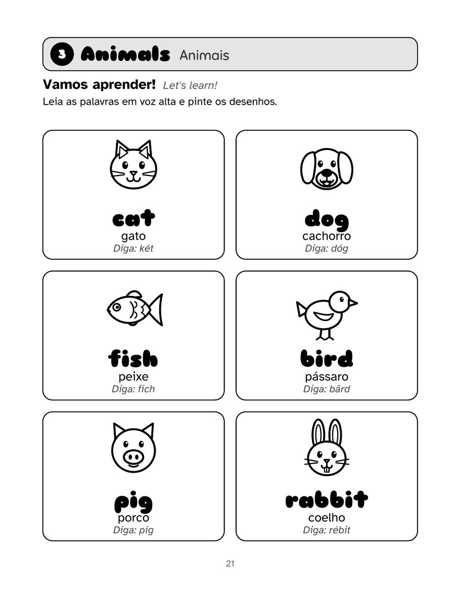
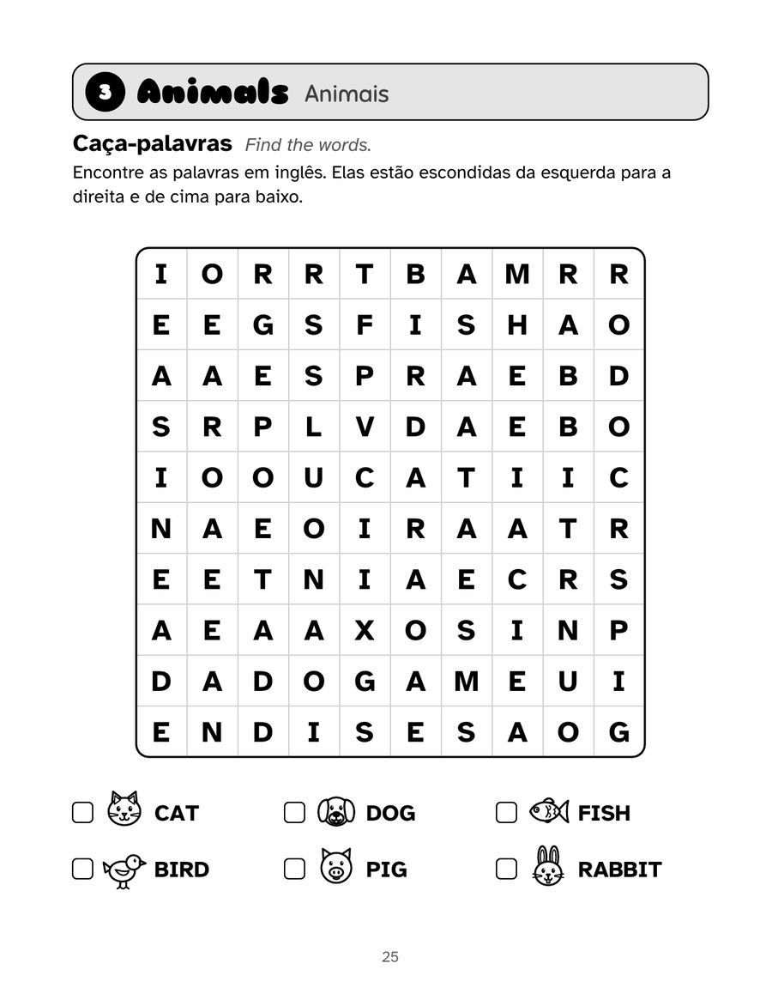
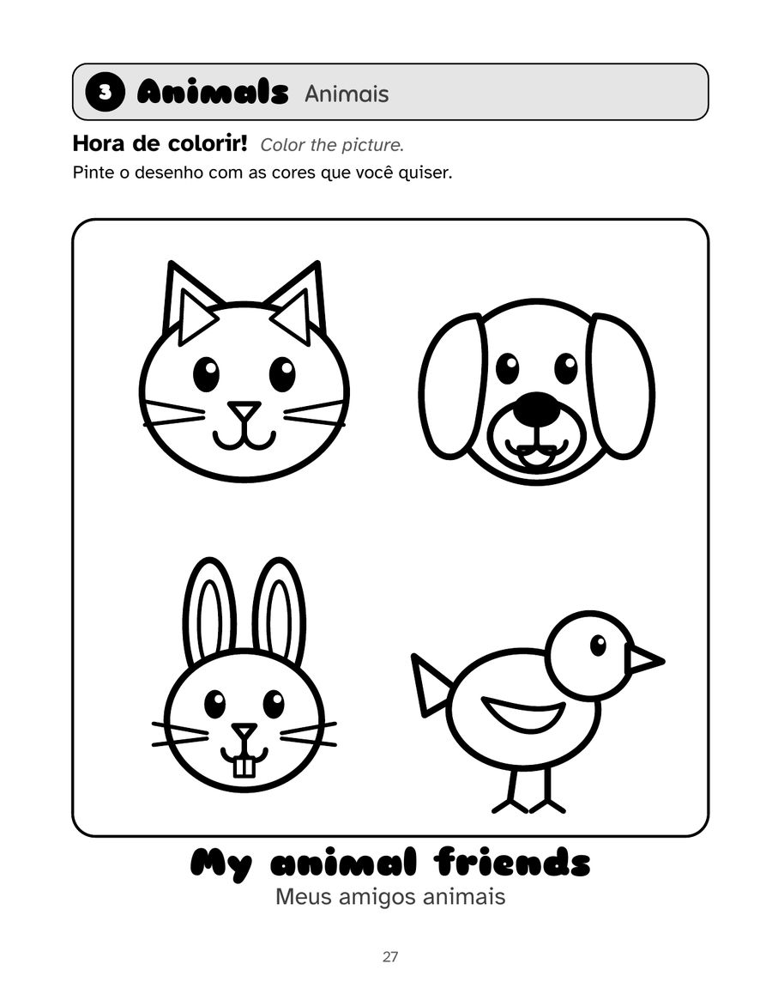

Português (Brasil)
Meu Primeiro Livro de Atividades em Inglês
Inglês para crianças de 5 a 9 anos
Um livro de atividades em português do Brasil para dar os primeiros passos no inglês: 15 temas do dia a dia e mais de 100 palavras, com desenhos para colorir e atividades curtas. Os pais não precisam falar inglês para ajudar.
PDF com 4 páginas do livro, pronto para imprimir. Amostras grátis para uso pessoal e em sala de aula.
118 páginas · 21,6 × 27,9 cm · brochura · Edições Gacrux
O que tem no livro
- Cada palavra em inglês e em português, com dica de pronúncia
- Cobrir o pontilhado e depois escrever sozinho
- Ligar, caça-palavras e letras embaralhadas em todos os temas
- 15 desenhos grandes para colorir
- Página de orientação para os pais
- Respostas no fim e um certificado para a criança
Veja por dentro
Toque em uma página para ver maior.





